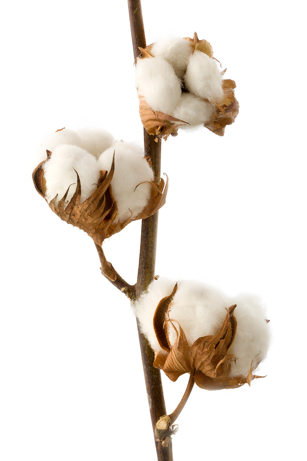
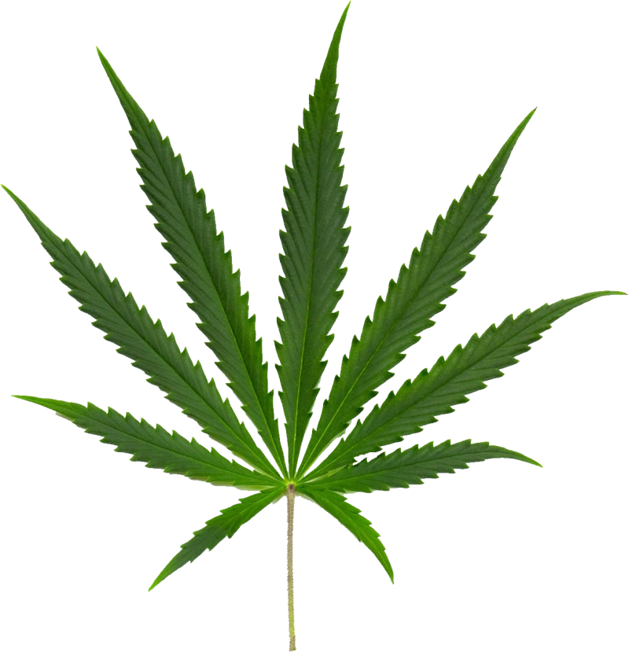
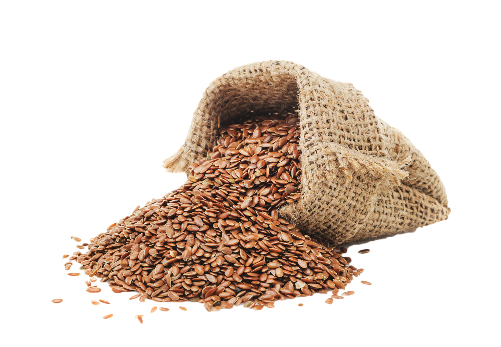
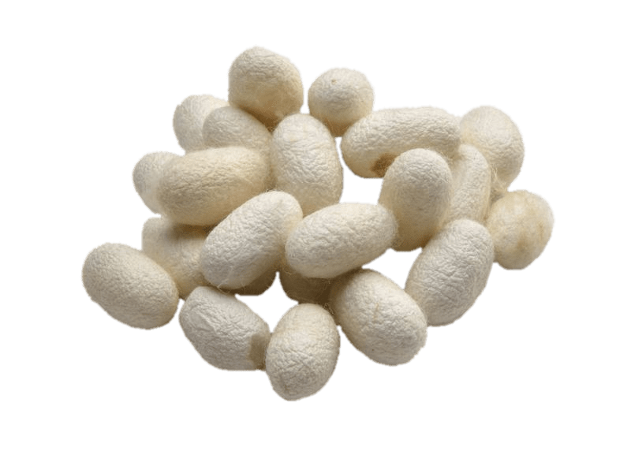
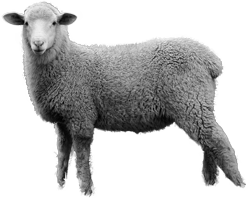
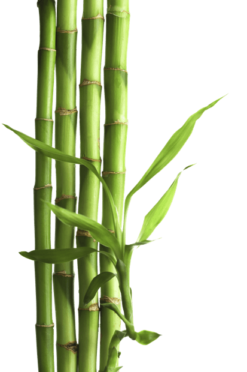
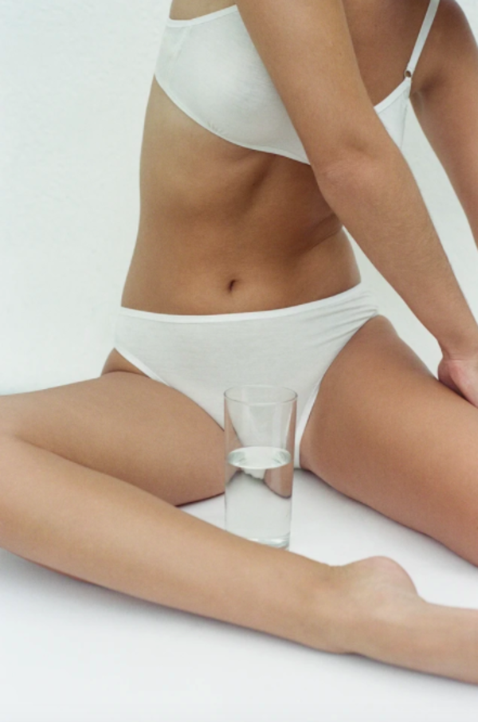
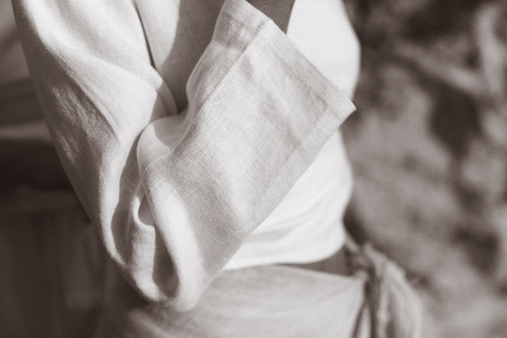
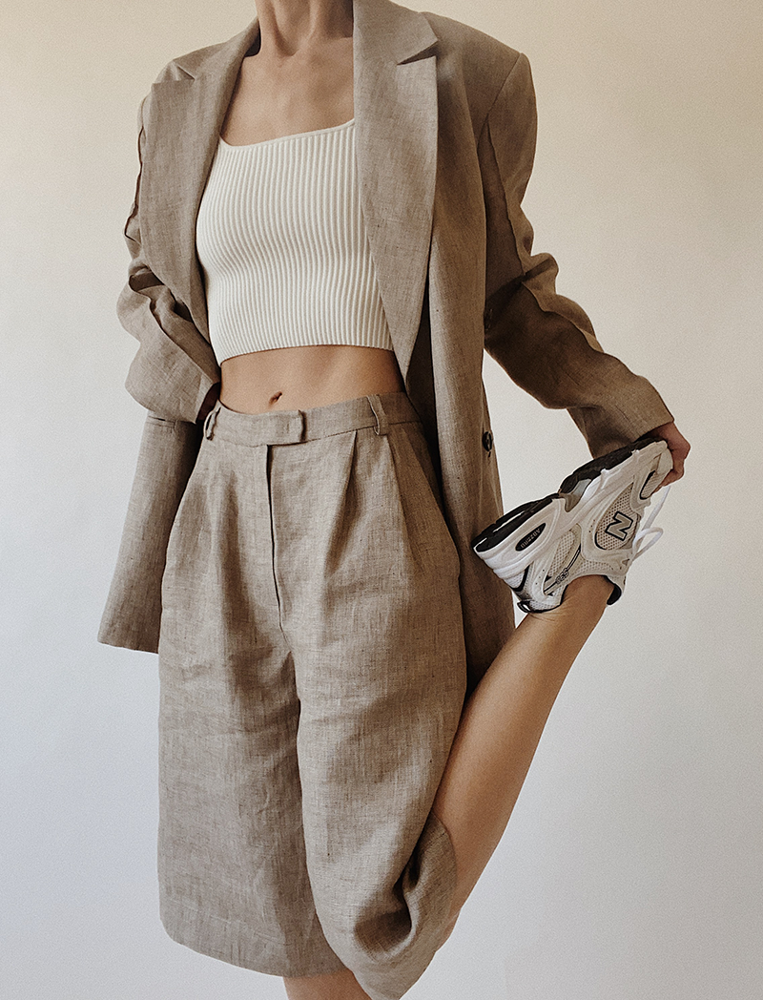

Natural fabrics
Organic Cotton
Cotton is widely used in clothing apparel due to its light and breathable texture. It is one of the most preferred fabrics in hot and humid regions. This is beacause cotton is highly breathable and can also aborb a good amount of sweat. There are various sustainable cottons available, but, if you want to be sure what you are buying is grown in a truly sustainable way, certified organic cotton is the best option. Organic is the only system which eliminates highly toxic substances from the environment and instead works holistically, for the long-term benefit of people and the planet.
Hemp
Hemp is a wonderfully versatile plant that has been cultivated and used for hundreds of years as a fabric. The more that you wash and wear hemp fabric, the softer it becomes. This efficient, nutrient-rich plant is much kinder to the environment than many other fabrics as it requires very little water, no pesticides and naturally fertilises the soil it grows in.
Linen
Linen is one of the most biodegradable and stylish fabrics in fashion history. It is strong, naturally
moth resistant, and made from flax plant fibres, so when untreated (i.e. not dyed) it is fully biodegradable.
Its natural colours include ivory, ecru, tan, and grey. Linen can withstand high temperatures—making the fabric
generally perfect for raiding the jungle or lounging on a tropical island. It absorbs moisture without holding bacteria.
In fact, it is actually stronger when wet than dry nd becomes softer and more pliable the more it is washed. It just gets better and better!
Flax is resilient and can grow in poor soil, using far less water in its consumption than cotton.
According to the European Confederation of Linen and Hemp, “Across its lifecycle, a linen shirt uses 6.4 litres
of water” compared to 2,700 litres for a cotton shirt.
Silk
Silk has a long history as one of the most luxurious fabrics in the world. The fibres that make silk are spun from the threads of a silkworm cocoon. The worms subsist on mulberry leaves, which are resistant to pollution and easy to cultivate. However, silk producers need to boil the cocoon in order to extract the fibres, killing the worms in the process. There are cruelty-free options for silk-lovers – Ahimsa silk, also known as ‘peace silk’, allows the moth to evacuate the cocoon before it is boiled. Some silks that fall under the Ahimsa umbrella include ‘Eri silk’ and ‘Tussar silk’
Wool
Any clothing made from wool can be a practical long-term investment for the winter months. It’s biodegradable and if cared for correctly, a quality, timeless woollen garment will last a lifetime. As with any industry that uses animals for commercial purposes however, there are ethical considerations around their treatment - mulesing - practice that involves cutting the sheep's skin.
Bamboo
Bamboo is marketed as a great natural alternative to cheap synthetics because it is fast growing and requires fewer pesticides than other natural fabrics. So when organically farmed and manufactured, bamboo fabric is an ecofriendly option.

